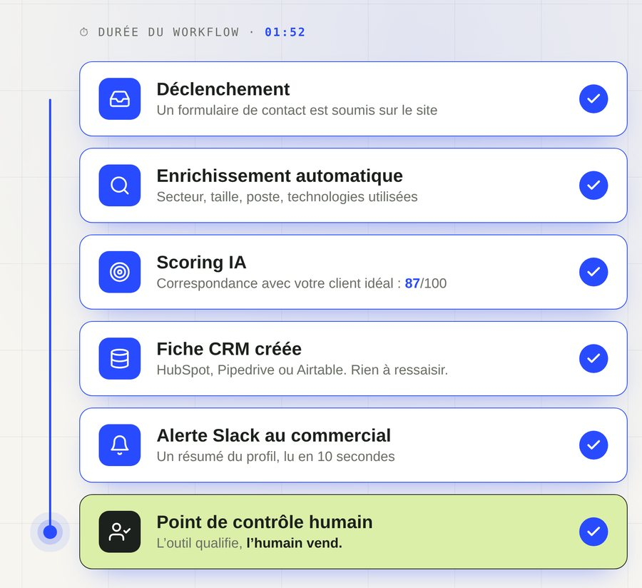
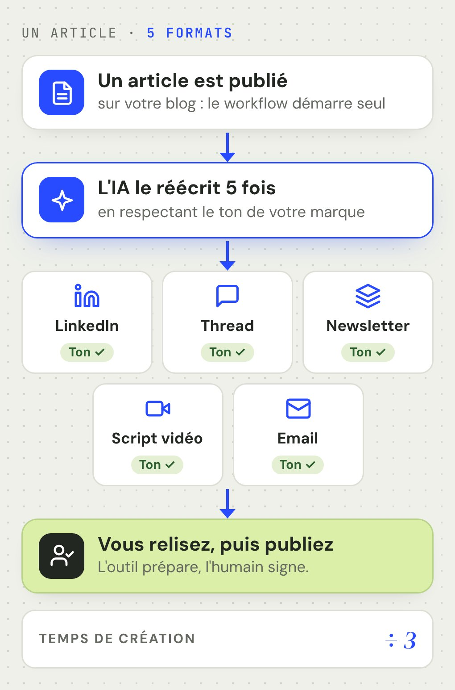
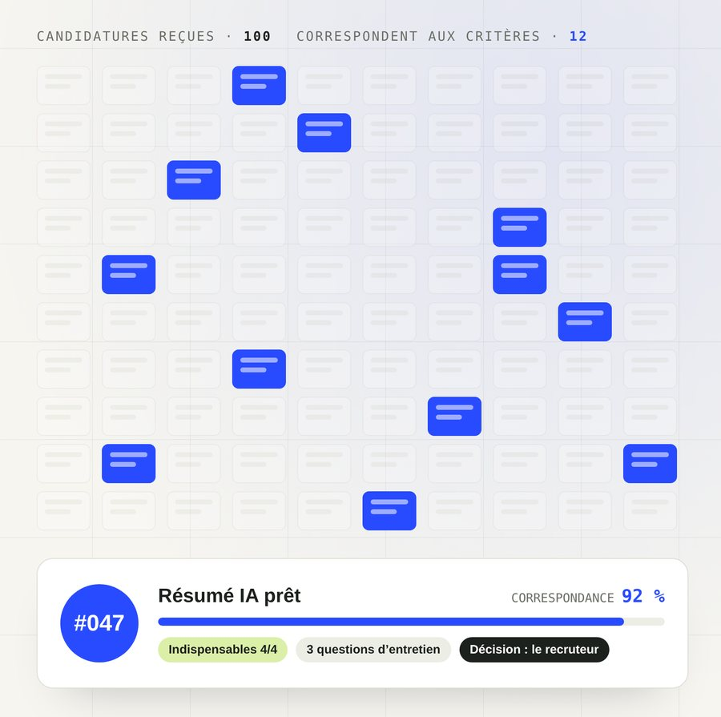

Arthur Parois — Marketing digital, IA & product builder
Du terrain au digital. Un changement choisi : alternance disponible début 2027.
J’ai travaillé plusieurs années à flux tendu : accueil, animation, coordination. J’y ai appris à lire vite une situation et à trouver le vrai besoin derrière la demande. Aujourd’hui, je construis les outils IA et les automatisations no-code qu’une équipe va réellement utiliser.
Je parle aux équipes non techniques, sans jargon
Je pars de leurs contraintes réelles, pas de l’outil
Je livre des outils utilisés, pas rangés dans un tiroir
Recopier, trier, relancer : ces tâches répétitives peuvent passer dans des workflows n8n, Make ou Airtable. L’outil fait le travail mécanique, votre équipe garde la validation.
n8n
Make
Airtable
🛠️
Construire l’outil qu’on va vraiment utiliser
Avant de choisir une techno, je clarifie qui va s’en servir et pour quoi faire. Ensuite je construis en no-code et avec l’IA générative, puis j’ajuste avec les utilisateurs.
Notion
Claude
GitHub
💬
Traduire l’IA en actions concrètes
Pour les équipes non techniques : expliquer simplement ce que l’IA peut faire (et ce qu’elle ne fait pas), cadrer un premier cas d’usage utile, puis accompagner la prise en main.
Claude
GPTChatGPT
{ }API & JSON
Workflows concrets
Trois problèmes réels. Trois solutions qui tournent.
Ce ne sont pas des captures d'écran. Ce sont trois scénarios d'automatisation construits pas à pas, pour des métiers différents. Chaque étape correspond à un nœud réel dans un outil comme n8n ou Make.
Équipes commerciales · SaaS · Services B2B
Un prospect visite le site. Il est qualifié et dans le CRM en deux minutes.

Les 6 étapes
📥
DéclenchementUn formulaire de contact est soumis, ou un prospect est identifié via un outil de tracking (lemlist, Clay, formulaire web).
🔍
Enrichissement automatiquen8n interroge des sources publiques pour compléter le profil : secteur, taille de l'entreprise, poste du contact, technologies utilisées.
🎯
Scoring IAUn modèle de langage analyse le profil et attribue un score de correspondance avec les critères ICP (Ideal Customer Profile) de l'entreprise.
🗂️
Création CRMUne fiche est créée dans le CRM (HubSpot, Pipedrive, Airtable) avec toutes les données enrichies et le score. Rien à ressaisir.
🔔
Alerte commercialeLe commercial reçoit une notification Slack avec un résumé du profil et le score de qualification. Il sait en 10 secondes s'il rappelle.
✅
Point de contrôle humainC'est le commercial qui décide de contacter. L'outil qualifie, l'humain vend.
Équipes marketing · Agences · Créateurs de contenu
Un article est publié. Cinq formats sont prêts pour les réseaux en dix minutes.

Les 6 étapes
📡
DéclenchementUn nouvel article est publié sur le blog (webhook Wordpress, Webflow, ou RSS). Le workflow s'active automatiquement.
📄
Extraction du contenun8n extrait le texte complet de l'article : titre, sous-titres, points clés, conclusion.
✍️
Adaptation par formatUn agent IA génère 5 versions : post LinkedIn (accroche + corps + CTA), thread court, newsletter, script vidéo courte, et résumé email.
🎨
Respect du tonChaque version respecte les consignes de style de la marque, passées en contexte à l'agent. Le ton ne change pas d'un format à l'autre.
🗓️
Mise en file d'attenteLes contenus sont déposés dans l'outil de planification (Buffer, Later, Notion) avec les dates de publication suggérées.
✅
Point de contrôle humainLe responsable marketing relit et valide avant publication. L'outil prépare, l'humain signe.
RH · Cabinets de recrutement · Équipes en croissance
100 candidatures reçues. Les profils pertinents sont identifiés avant le café.

Les 6 étapes
📥
DéclenchementUn candidat soumet sa candidature (formulaire, job board, email). Le workflow s'active immédiatement.
🧾
Extraction du profiln8n analyse le CV et la lettre : expériences, compétences, formation, mobilité. Les données sont structurées automatiquement.
⚖️
Analyse par critèresUn agent IA compare le profil aux critères définis pour le poste (must-have, nice-to-have, éliminatoires). Il produit un résumé structuré — jamais une décision définitive.
✉️
Accusé de réceptionUn email personnalisé est envoyé au candidat dès la réception : confirmation, délai de réponse estimé, prochain contact.
🗂️
Dossier recruteurLa fiche candidat est créée dans Airtable avec le résumé IA, le score de correspondance et les questions suggérées pour l'entretien.
✅
Point de contrôle humainLe recruteur lit le résumé, décide, puis planifie l'entretien depuis la fiche. L'outil prépare, l'humain décide.
Ces scénarios sont des modèles reproductibles, pas des promesses de résultat. Les gains mentionnés sont des estimations basées sur des hypothèses de volume et de temps : ils sont à mesurer dans votre contexte réel.
En vidéo
Deux vidéos, moins de trois minutes. Qui je suis, ce que je fais.
Le pitch · 1 min 04Qui je suis et ce que je vous propose.
La démo · 1 min 30Trois workflows en action.
Contact
Rencontrons-nous.
Vous cherchez un alternant pour vos projets IA & no-code à partir de début 2027 ? Un process vous fait perdre du temps ? Racontez-le-moi : on regarde ensemble par où commencer.